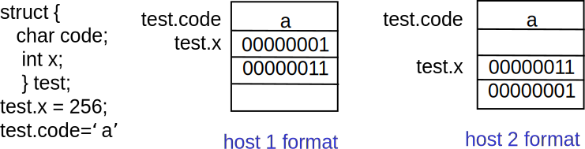
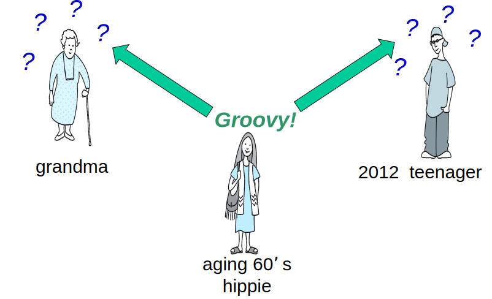
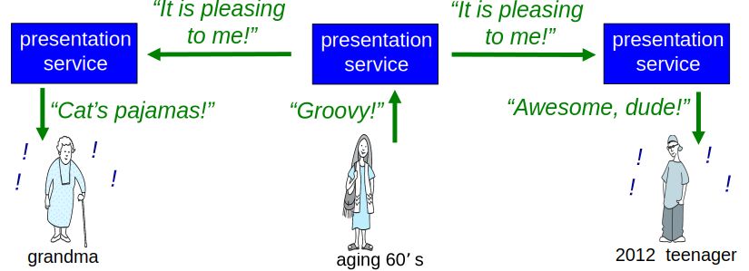
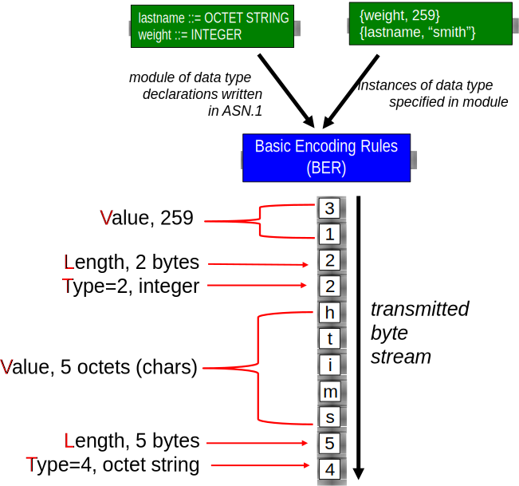

Monitoramento, análise, resposta do/ao comportamento da rede.
Redes são sistemas complexos, apresentam problemas.
Inicialmente, gerência era uma prática quase inexistente.
Casos de uso:
Detecção de falha.
Monitoramento de serviços.
Monitoramento de tráfego.
Detecção de intrusão.
...
Áreas de gerenciamento:
Desempenho.
Falhas.
Configuração.
Contabilização.
Segurança.
Infraestrutura formada por:
Dispositivos gerenciados.
Agente de gerenciamento.
Objetos gerenciados.
Entidade gerenciadora.
Protocolo de gerenciamento.
Na Última Aula (II)...
SNMP: padrão de fato.
Transporta informações de gerência.
Requisição/resposta ou traps.
Evoluiu através de 3 versões.
Recentemente, preocupação maior com segurança.
MIBs: bases de dados de gerência.
Conjunto de informações de gerência.
Semântica, sintaxe definida através de SMI.
Organizadas hierarquicamente.
ISO Object Identifier.
ASN.1
O Problema da Apresentação
Pergunta: a capacidade de copiar perfeitamente dados da memória de um dispositivo para a memória de outro resolve por completo o “problema da comunicação”?
Resposta: nem sempre!

Problema: convenções e formatos de armazenamento de dados diferentes.
Um Exemplo de Vida Real do Problema de Apresentação

Problema da Apresentação: Potenciais Soluções
Origem descobre o formato do destinatário. Origem traduz dados para o formato do destinatário. Origem envia.
Analogia com o mundo real?
Prós e contras?
Origem envia. Destinatário descobre o formato da origem. Destinatário traduz dados para o formato local.
Analogia com o mundo real?
Prós e contras?
Origem traduz dados para formato independente de plataforma. Origem envia. Receptor traduz dados para o formato local.
Analogia com o mundo real?
Prós e contras?
Resolvendo o Problema da Apresentação
Traduzir dados do formato local para formato independente de plataforma.
Enviar dados no formato independente de plataforma.
Traduzir dados do formato independente de plataforma. para o formato remoto.

ASN.1: Abstract Syntax Notation 1
Padrão ISO X.680:
Usado extensivamente na Internet.
Como comer vegetais, sabendo que “é bom para você”!
Tipos de dados definidos, construtores de objetos.
Como o SMI.
BER: Basic Encoding Rules:
Especifica como objetos de dados definidos no ASN.1 devem ser transmitidos.
Cada objeto transmitido possui um tipo, um tamanho, um valor: codificação TLV.
Codificação TLV
Ideia: dados transmitidos são auto-identificáveis.
T: tipo do dado, um dos tipos definidos no ASN.1.
L: comprimento do dado em bytes.
V: valor do dado, codificado de acordo com o padrão ASN.1.
Valor da Tag
Tipo
1
Booleano
2
Inteiro
3
Cadeia de Bits
4
Cadeia de Octetos
5
Null
6
Object Identifier
9
Real
Codificação TLV: Exemplo

Resumo da Aula...
Interoperabilidade de dados: arquiteturas diferentes, representações diferentes.
e.g., big-endian, little-endian.
Redes de computadores: interconexões entre máquinas de arquiteturas possivelmente diferentes.
Possíveis soluções:
Origem traduz para formato do destino.
Destino traduz para seu formato.
Origem traduz para formato intermediário, padronizado, traduzido pelo destino para seu formato.
ASN.1: formato intermediário, padronizado, independente de plataforma.
Define tipos básicos de dados.
Permite construção de tipos complexos.
Define também regras de codificação.
TLV: tipo, comprimento, valor.
Leitura e Exercícios Sugeridos
ASN.1:
Páginas 570 a 574 do Kurose (Seções 9.4 e 9.5).
Exercícios de fixação 9 a 12 do capítulo 9 do Kurose.
Problemas 6 a 8 do capítulo 9 do Kurose.
Gerência de Redes: Sumário
Gerência de Redes.
Extremamente importante: 80% do “custo” da rede.
ASN.1 para descrição dos dados.
Protocolo SNMP usado como ferramenta para transporte das informações.
Gerenciamento de redes: mais arte que ciência.
O que medir/monitorar?
Como responder a falhas?
Alarmes baseados em correlação/filtros?
Próximas Aulas...
Encerramos hoje as aulas de conteúdo da disciplina.
As próximas semanas serão dedicadas às últimas avaliações.